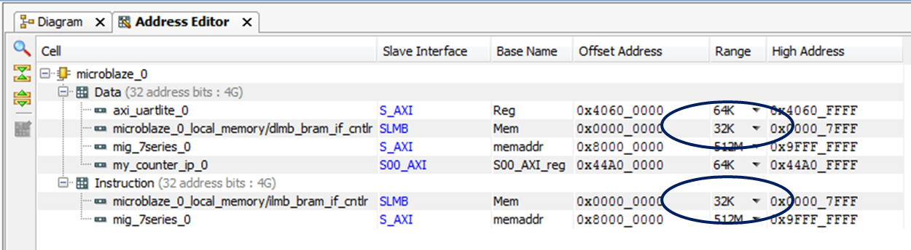
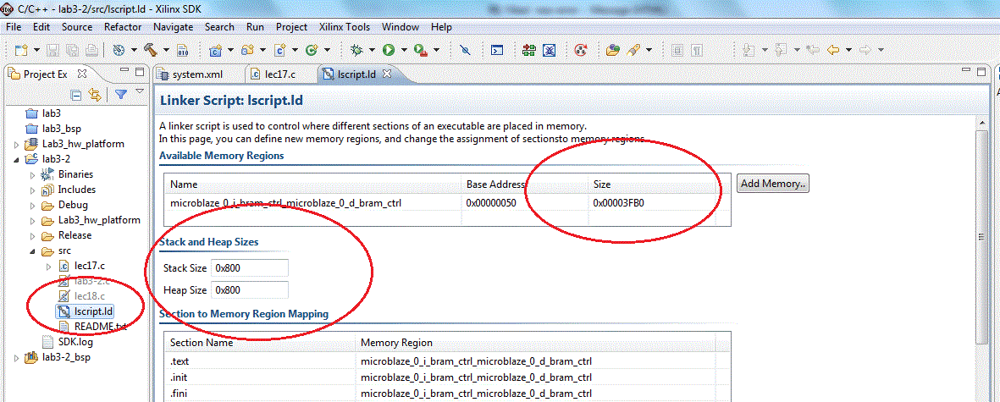

Homework #10
Guidelines- Complete your work on green engineering paper
- Staple in upper left if more than one sheet.
- Format the top of the first sheet as follows.
The page reference for the first page of a four page document would be 1/4, the second page of this document would be labeled 2/4 and so on.ECE 383 [Your name] HW#10 [Due Date] [Page ref] - Do not write on the back side of the green engineering paper
- Digital copies of all code, testbenches, and waveforms will also be submitted via BitBucket.
Assignment
- Complete the development of the example in Lecture 18.
- Modify the lec10 component to include a roll signal that
is asserted whenever the counter is at the maximum count value.
In order to accomplish this with the generic counter width
you may need to create a temporary signal that is equal to the
highest count value (see below). Add the roll signal as an output to be displayed just
like the count value on the help menu (FYI, If you load a Capital E and then
count up you can get to max count). Be prepared to demo your circuit at the beginning of Lesson 19.
maxCount <= (others => '1');Developed Lecture 18 Block Digagram

Note
You will most likely get an error that looks like the following:'Invoking: MicroBlaze Print Size' mb-size lab3.elf |tee "lab3.elf.size" text data bss dec hex filename 8100 272 8244 16616 40e8 lab3.elf 'Finished building: lab3.elf.size' Building target: lec18.elf Invoking: MicroBlaze gcc linker mb-gcc -Wl,-T -Wl, bla bla bla -Wl,--start-group,-lxil,-lgcc,-lc,--end-group c:/xilinx/14.7/ise_ds/edk/gnu/ bla bla /ld.exe: lec18.elf section `.stack' will not fit in region `microblaze_0_i_bram_ctrl_microblaze_0_d_bram_ctrl' c:/xilinx/14.7/ise_ds/edk/gnu/ bla bla /ld.exe: region `microblaze_0_i_bram_ctrl_microblaze_0_d_bram_ctrl' overflowed by 80 bytes collect2: ld returned 1 exit status make: *** [lec18.elf] Error 1
Look at the MicroBlaze Print Size address editor and you will find that the value under dec (size of your program (instructions + data) in decimal bytes) is the 32k you allocated in Vivado for the microblaze memory. You should be good but potentially you may have to increase the size of the instruction and data memory in Vivado and recompile (see figure below). As you will see in the Print Size output above, I ran into this problem when my program JUST exceeded the 16K I had allocated for it in Vivado.

After you make this change, you will need to increase the stack and heap space inside SDK. Since you already started with 32K you may only have to increase the stack and heap in SDK. To do this, open the linker script (lscript.ld) and then increase the size of your memory to reflect the size entered in Vivado. Finally you can increase the stack and heap sizes to cover that needed in the error message.
